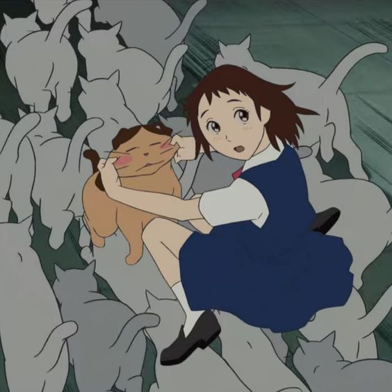
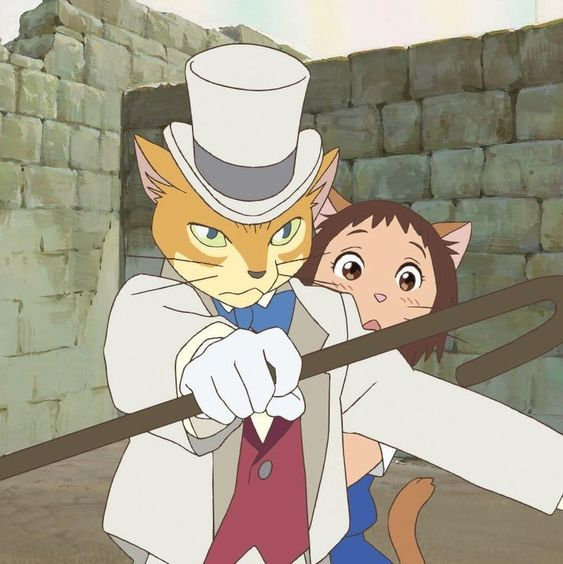
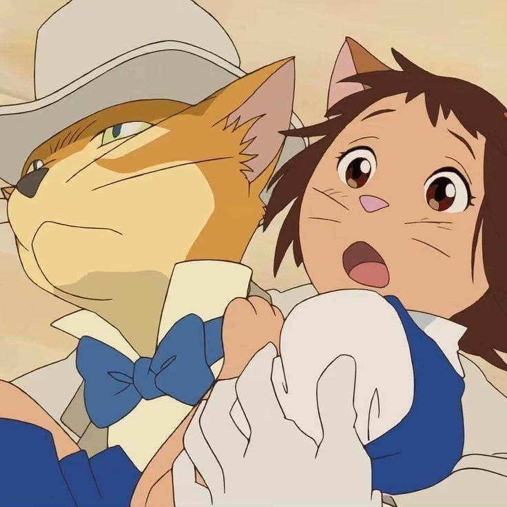
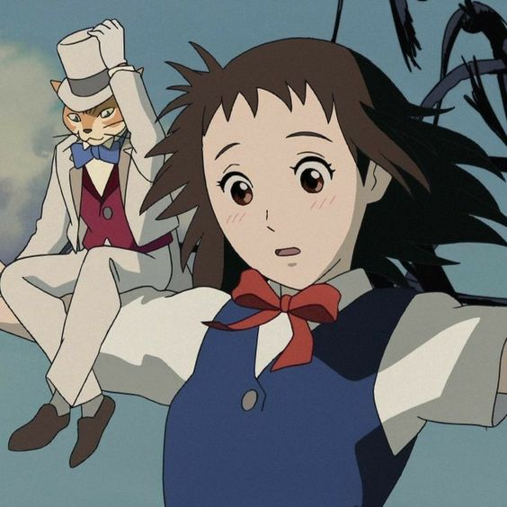

Haru salva a un gato que iba a morir atropellado y descubre que el felino es el príncipe de los gatos. El minino, agradecido, quiere casarse con Haru y la lleva al reino de los gatos, pero ella solo desea una cosa: escapar y ser libre.
   El personaje principal de esta historia es una chica adolescente llamada Haru que anda sin rumbo por la vida y suele hacer y aceptar todo los que las personas de su entorne imponen, siempre dejando de lado sus propias emociones.
Su vida se complica cuando es secuestrada en el reino de los gatos, donde terminan las personas que no tienen una mente propia.
Los gatos se la llevan a su mundo en agradecimiento por haberle salvado la vida al príncipe del reino.
El Rey decide que Haru se quede con ellos para siempre y se case con su hijo.
Sin embargo, Haru cuenta con la ayuda del Barón y Muta (otro gato que aparecia en Whisper of the Heart) para poder salir del lío en que se metíó.
A través de esa aventura la chica además emprende un viaje de autodescubrimiento donde construye la confianza necesaria que necesita para hacer frente a las situaciones de la vida diaria.